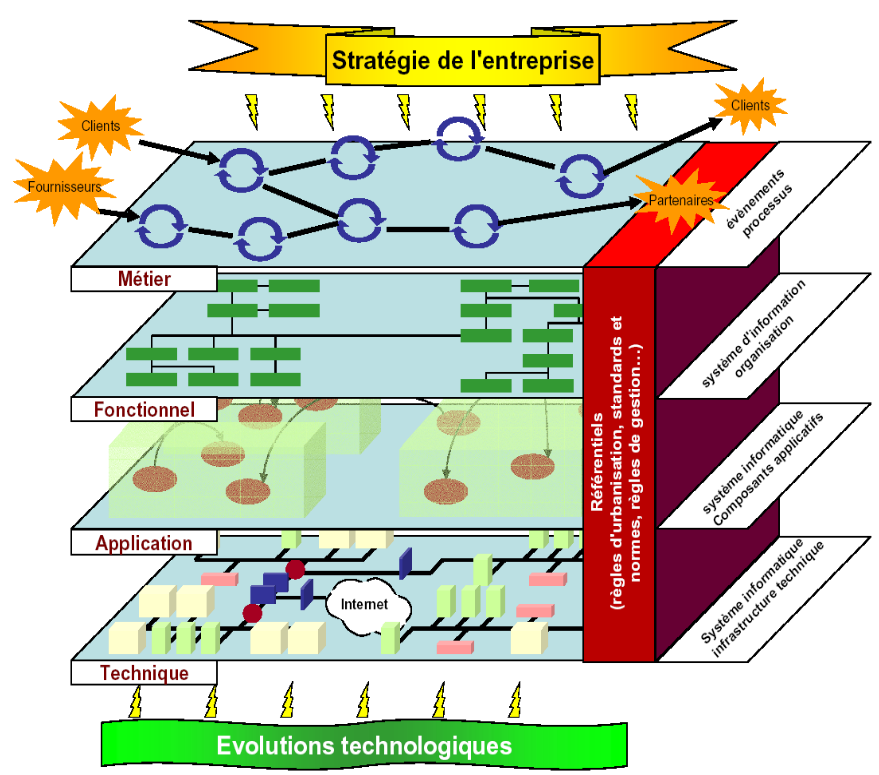

GESTION D'ENTREPRISE ET ORGANISATION DE SYSTEME D'INFORMATION
CHAPITRE I : L'ORGANISATION ET LES SYSTEMES D'INFORMATION
L'ORGANISATION
Les Organisations (administration, collectivités, associations, entreprises, sociétés...) ont toutes :
- Une politique (ensemble des choix),
- Une stratégie (exercices des choix),
- Une identité (des valeurs),
Exemple : Créée en 1995, Amazon réalise vingt ans plus tard un chiffre d'affaire de 10 000 dollars par seconde auprès de 150 millions de clients près de 200 millions de références, soit des ventes annuelles supérieurs à 60 milliards de dollars (Auchan, fondé en 1961, est à 60 milliards d'euros).
A ses débuts, la société a mis en oeuvre une stratégie technologique (vente sur internet). Elle a ensuite innové dans ses modes de distributions (création de places de marchés) ainsi que dans l'optimisation de sa logistique (sercive de livraison rapide). Pour être distributeur universel où l'on trouve de tout, de "A" jusqu'à "Z", elles s'est dotée d'un organigramme simple. Ses valeurs sont controversées (certains parlent d'exploitation des salariés), alors que son image de réactivité permet de fidéliser des clients toujous plus satisfait par la marque. Sa politique est souvent critiquée (mort lente des petits librairies, due à une politique tarifaire féroce).
LE SYSTEME D'INFORMATION (S.I)
Les système d'information d'une organisation est un ensemble de RESSOURCES (individus, d'éléments matériels et immatériels, de procédures, de données...) qui, en interaction, transforment des informations élémentaires, préalablement saisies et stockées, en informatinos élaborées.
Ces différentes FONCTIONS de l'information permettent aux dirigeants de prendre des décisions adaptées. Elles permettent également aux autres utilisateurs de contribuer au fonctionnement de l'organisation au travers de différents ROLES.
RESSOURCES (5) ⇒
- Ressources humaines
- Procédures/Processus
- Ressources logicielles
- Données/Connaissances
- Ressources matérielles
FONCTIONS (4) ⇒
| Traitement | |
| Collecte | Diffusion |
| Mémorisation | |
ROLES (4)
- Piloter
- Aider à la décision
- Evaluer/Corriger
- Coordonner
Exemple : Pour assurer la distribution d'un produit à un client (processus de vente), un distributeur doit tout d'abord s'approvisionner et passer des commandes au près de fournisseurs (des ressources humaines formées vont appliquer une série de procédures). A cette occasion, les utilisateurs du S.I vont collecter certaines informations via un logiciel, par exemple un Progiciel de Gestion Intégré. Ce logiciel nécessite des ressources matérielles pour fonctionner (un réseau, des serveurs, une base de données, des ordinateurs...).
Les données saisies sont ensuite traitées de façon manuelle ou idéalement de façon automatique, lorsque cela est possible. A chaque modification, les données sont automatiquement mémorisées. Les informations sont affichées à la demande en fonction des besoins préétablis par la hiérarchie : la diffusion est définie en fonction des responsabilités de chacun. Cela signigie que chaque utilisateur doit possédéer un rôle. Par exemple, le comptable stagiaire aura accès aux informations comptables pour évaluer la comptabilité de l'organisation, mais il n'aura pas accès aux informations de secret de fabrication confidentiel du service R&D. Il aura accès à son propre relevé d'heures, mais ne poura malheureusement pas disposer du planning de la secrétaire du service voisin, aussi jolie soit-elle...
Les informations synthétisées permettent de piloter l'organisation et de coordonner les activités opérationnelles telles que la gestion des achats, la facturation, la gestion de la chaine logistique...
L'INFO DANS TOUS SES ETATS...
EXERCICE
Un conducteur a été flashé par un radar. Quelques semaines plus tard, il reçoit à son domicile une lettre qui lui indique le montant de la contravention et le nombre de points qui seront retirés à son permis de conduire.
Décrivez ce que l'envoi de cette lettre, suite à une infraction, suppose en termes de Collecte(C), de Mémorisation(M), de Traitement(T) et de Diffusion(D) de l'information.
LES DIFFERENTES VUES DU SI
Exemple : Une entreprise a pour ambition de "faire du chiffre"
!!! Cette stratégie oriente le choix d'une embauche d'un commercial...
Le processus de vente est un processus Métier : il est composé de différentes étapes, d'activités. Le nouveau commercial va devoir se former aux exigences de l'organisation, et appliquer à la lettre les procédures indiquées par son responsable.
Du point de vue Fonctionnel, pour exercer son métier, notre commercial s'appuiera sur les ressources humaines : il a besoin de ses collaborateurs pour répondre aux besoins de ses clients. Par ailleurs, voie hiérarchique, il possède des responsabilités. Enfin, il va appuyer ses propositions à partir d'informations possédées par l'organisation (le fichier client de l'entreprisse, le planning, le catalogue, les tarifs...)
Le commercial va également utiliser des Applications : il utilisera directement un progiciel de Gestion de la Relation Client, différents outils bureautiques et sans doute un navigateur pour aller sur internet... et prospecter!
Il n'en aura pas forcément conscience, mais en dehors de son téléphone, et de son ordinateur, il existe tout un arsenal invisible lui permettant de réaliser ses exploits : d'un point de vue Technique, le service informatique va connecter de nombreux éléments pour le rendre plus opérationnel (réseau, serveur, bases de données...). Les Nouvelles Technologies de l'Information et de Communnication (NTIC) vont également améliorer et compléter l'infrastructue informatique et finalement influencer les usages (ex : le nomadisme permis par l'accès aux outils de son entreprise, bien qu'il soit à distance chez le client ou sur son trajet).
LES CINQ ELEMENTS DE TOUTE ENTREPRISE
EXERCICE
Globalement, une entreprise est un processus capable d'être répété qui :
- crée et distribue quelque chose de valeur...
- répondant à un désir ou à un besoin d'autres individus...
- à un prix qu'ils sont prêts à payer...
- et d'une manière qui satisfait leurs besoins et leurs attentes...
- en vue de dégager des bénéfices suffisants pour ses propriétaires afin de poursuivre son activité.
Peu importe que vous soyez à la tête d'une entreprise individuelle ou d'une grosse multinationale. Supprimez un seul de ces cinq facteurs et vous n'avez plus affaire à une entreprise. Une entreprise qui ne crée pas de valeur pour les autres est un passe-temps. Une entreprise qui n'attire pas l'attention est un échec. Une entreprise qui ne vend pas la valeur qu'elle crée est une organisation à but non lucratif. Une entreprise qui ne tient pas ses promesses est une entreprise frauduleuse. Une entreprise qui ne gagne pas suffisamment d'argent pour continuer à fonctionner est condamnée à fermer.
Josh Kaufman - Le Personal MBA -
- La création de valeur Découvrir ce que les gens veulent ou ce dont ils ont besoin, puis le créer.
- Le marketing Attirer l'attention et développer une demande pour ce que vous avez créé.
- La vente Transformer des prospects en clients qui paient.
- Délivrer la valeur Donner à vos clients ce que vous leur avez promis et vous assurer qu'ils sont satisfaits.
- La finance Gagner suffisamment d'argent pour poursuivre votre activité et récompenser vos efforts.
Editions Zen Business 2013
Question de rélexion :
En quoi les systèmes d'information contribuent-ils aux 5 éléments de toute entreprise?
LES PROBLEMATIQUES FREQUENTES DES ORGANISATIONS
Les petites organisations maîtrisent l'information, mais ne la voient pas comme un ensemble de systèmes. L'information est souvent informelle et passe très souvent par le canal humain.
Exemple : Une commande faite à un fournisseur par téléphone, un accord oral à un client pour une remise...
Les petites organisations ont souvent besoin de formaliser et d'automatiser les traitements de l'information pour accompagner leur croissance et obtenir des gains de productivité.
Exemple : Remplacer un homme par un robot, c'est automatiser une production. Amortier un an, l'acquisition de cet outil est l'occasion de multiplier par 10 la productivité de certaines chaines de fabrication... et de multiplier son CA d'autant!
Exemple 2 : "Passer à l'ISO 9001", c'est mettre en place des procédures Qualité, formaliser les processus et se doter de moyen de les évaluer. C'est en fait surtout garantir aux clients une qualité de service fiable et régulière, et assurer sa pérennité sur le longterme.
L'EFFET D'EMPILEMENT : COMPLEXITE ET GASPILLAGE
Les systèmes d'information des organisations de taille intermédiaire se sont souvent construits de manière empirique. Les organisations qui ne remettent pas en cause leur S.I sont dites non matures : elles sont victimes de l'effet empilement... Au gré des besoins, les organisations ont ajouté puis rajouté des éléments aux systèmes d'information existants pour satisfaire une urgence, une priorité, sans repenser l'ensemble, sans intégrer les différentes parties du système d'information. Le S.I devient complexe, il ressemble à un vrai plat de spaghetti.
Exemple : Au départ, l'application comptable n°2 devait simplement remplacer la première application comptable. Mais on découvre que le nouveau logiciel ne couvre pas toutes les fonctionnalités précédentes : il manque la génération automatique de ratios. On décide donc de maintenir l'application en parallèle. Et puis arrive une nouvelle application permettaant d'assurer le trait "l'application n°3 est une révolution!"... On maintient l'application 1 pour le cas où, même si les ratios ne servent plus vraiment...Etc.
Exemple de la théorie du mille feuille : On a tendance à multiplier les moyens de communication (réunion, lettres, mail, sms, ...) sans les mélanger véritablement : "As-tu reçu mon mail?", "Il faut se réunir pour présenter l'idée!", "a2m1 pr rdv", "CR DE REUNION"...
L'URBANISATION POUR RATIONALISER LES INFRASTRUCTURES
Les plus grandes entreprises se dotent de moyens spécifiques pour éviter cet effet d'empilement nuisible à leur productivité : elles mettent en place le concept d'urbanisation. Ce concept vise à établir une cohérence entre les processus de l'organisation et ses ressources informatiques. On va éliminer toutes les applications et les systèmes inutilisés. Cela permet de réaliser des économies. Et surtout de rationaliser les usages.
Exemple : Les applications obsolètes doivent être supprimées (avec prudence). Elles coûtent en maintenance, en espace, en électricité, etc. Encore faut-il savoir quelles sont les applications encore utilisées?! Une application comptable peut très bien être utilisée par une seule personne pour une seule fonctionnalité un jour par an, et dans ce cas il faut bien la maintenir!... Urbaniser consiste à établir la cartographie, les liens entre les processus et l'infrastructure, c'est-à-dire vérifier la cohérence entre la vision Métier et la vision Technique.
L'AUDIT DU SI POUR MIEUX SE CONNAITRE
Auditer le S.I permet d'identifier les caractéristiques de chacune des divisions. Cette analyse permet de comprendre les interactions entre la stratégie définie et l'utilisation réelle du S.I. Si elle reste complexe pour tous, une vision dynamique du S.I permet d'anticiper les évolutions d'une organisation d'un point de vue fonctionnel, applicatif et technique.
Exemple : Une analyse systémique des processus ou une méthodologie de type UML permet de mieux comprendre et mieux maîtriser l'information qui en découle.
LA MATURITE : TENIR COMPTE DE SES EXPERIENCES
L'étape suivante consiste à réorganiser l'activité autour des nouveaux outils, en cohérence avec l'outil de production et la stratégie, afin d'optimiser les processus. Une entreprise est dite mature lorsqu'elle remet en question son S.I régulièrement, à l'aide de nouveaux projets.
Exemple :Le modèle CMMI permet de décrire la maturité de toute organisation. Une organisation dont le niveau de maturité est maximal (dit "Optimisé") est une organisation qui tient compte de son expérience acquise lors de projets précédents. Lors de la mise en oeuvre de ses nouveaux projets, elle bénéficie d'une certaine souplesse et d'une très grand maîtrise de tous les aspects (financiers, humains, organisationnels...).
LES NTIC : UNE VEILLE ACTIVE VITALE
Le bon tempo pour faire évoluer son S.I?
Il n'y en a pas. L'organisation doit anticiper habilement les nouveautés technologiques, et pour cela comprendre le rythme effréné de l'évolution des NTIC : la veille technologique est fondamentale pour rester compétitif.
Exemple :Il existe de nombreuses façons de travailler à distance. Le nomadisme passe souvent par des technologies internet. Pour l'utilisateur, il s'agit d'une simple connexion, "comme à la maison"... Pour une entreprise, la réalité est toute autre : les questions techniques relatives à la sécurité sont particulièrement contraignantes.
UN BUDGET CONSEQUENT A MAITRISER
Par ailleurs, les investissements d'infrastructures ont souvent conséquents. Il faut donc maîtriser ce budget...
Exemple : Les services financiers, en particulier banques et assurances, représentent la moyenne la plus grande du ratio budget DSI CA de tous les secteurs (9%) du fait de la place au coeur de ces entreprises qu'occupe la DSI.Le budget IT dans ce secteur est destiné notamment à assurer la qualité de service des outils informatiques et au développement de l'activité et la présentation de nouveaux services. Avec un budget DSI de 5% du chiffre d'affaires, les entreprises de télécommunications se positionnent 2ème. Ce budget est principalement alloué au développement de l'activité et la qualité de service. Les entreprises de conseil et d'informatique se placent 3ème avec 4%. Ces entreprises se servent en général de la technologie dans une optique de contribution à la productivité.
EXERCICE DE STRATEGIE APPLIQUEE : FAIRE DES CHOIX
Même si investir dans le SI n'est pas plus rentable qu'un autre investissement, il est incontournable de tenir compte des besoin métiers qui correspondent directement aux évolutions stratégiques de l'organisation.
Exemple : Le budget est toujours limité : il faut prioriser les projets et trancher. Le projet "refonte du site internet" ayant pour objectif stratégique de "mieux communiquer et assurer une meilleure image" est-il préférable ou plus urgent que le projet "remplacement de l'application de Gestion de la Chaine Logistique" ayant pour objectif de "diminuer les frais de non-qualité lors des livraisons"?
LE PRINCIPE DE GOUVERNANCE : AU-DELA DU MANAGEMENT
Aussi les organisations ont-elles besoin, aujourd'hui, d'une gouvernance du système d'information afin de vérifier la contribution du système d'information à la valeur ajoutée de l'organisation, la conformité des objectifs du système d'information avec ceux de l'organisation, la cohérence intrinsèque des différentes parties du système d'information. Cette gouvernance est assurée par le "manager des systèmes d'information". Il doit coordonner et contrôler les objectifs, les moyens du système d'information dans le temps et dans l'espace afin que le système d'information contribue à la réalisation de la stratégie de l'organisation.
La gouvernance permet de vérifier la contribution du S.I à la valeur ajoutée de l'organisation.
Les investissements informatiques doivent se faire en fonction de l'intérêt général de l'organisation : ils visent à améliorer la performance opérationnelle, en s'assurant que les systèmes conçus permettent de tirer le meilleur parti des savoirs et des expériences des collaborateurs.
La gouvernance des systèmes d'information correspond donc aux relations entre la DSI et le reste de l'entreprise.
LA DIRECTION DES SI (LA DSI) : UNE DIRECTION A PART ENTIERE
La Direction des Systèmes d'Information (DSI) est un ensemble de personnes chargées de la gouvernance des systèmes d'information et du système informatique de l'organisation de l'organisation étudiée. Elle dépend en génaral de la Direction Générale mais elle travaille aussi en étroite collaboration avec les directions métiers de l'organisation. Un métier désigne une activité de l'organisation (BU, Business Unit en anglais).
La DSI utilise des indicateurs regroupés dans un tableau de bord pour orienter ses choix.
La direction des systèmes d'information veille au bon fonctionnement des systèmes d'information. Pour cela, elle vérifie que les systèmes d'information sont bien adaptés à l'activité de l'organisation et à ses évolutions futures. Elle doit être capable de proposer de nouveaux outils (logiciels, matériels, réorganisation du système d'information...) aux processus de l'organisation pour les rendre plus performants.
Remarque : La DSI peut être sous la DFA. Dans ce cas l'information est associée à un moyen. Attention aux projets rapidement impactés par la réduction des coûts!
LE DIRECTEUR DES SI (LE DSI) : DES QUALITES HUMAINES ET TECHNIQUES
- Possède une double compétence de manager et de technicien,
- Coordonne les équipes techniques, assure le fonctionnement quotidient des systèmes (Maintenance=Présent)
- Propose des développements informatiques pour le développement de l'entreprise (Projets=Futur)
CHAPITRE II : LA FONCTION INFORMATIQUE
LA DIRECTION DES SI
Idéalement, un bon organigramme fonctionnel devrait séparer l'activité en 2 branches.
- L'aspect définition des processus, gestion des projets, évolution du système (adaptation, PROJETS, orienté vers le fonctionnement FUTUR);
- L'aspect maintenance informatique du système (continuité de service, MAINTENANCE, orienté vers le fonctionnement PRESENT)
Dans la pratique, le DSI se décompose plutôt en fonction des besoins (organigramme structurel). L'organisation est souvent imposée par les Directions Métiers : aujourd'hui, la complexité des besoins est telle qu'il faut des spécialistes à la fois "métier" et "informatique" pour épauler chaque activité de l'entreprise.
Exemple : Un logiciel comptable requiert certaines compétences techniques pour maintenir les serveurs opérationnels, assurer les sauvegardes, etc. Lors d'une mise à jour importante ou du remplacement de l'application par une autre, il faut préparer le projet de migration, le mettre en oeuvre en "déversant la comptabilité", et s'assurer du bon déroulement du projet (faire des tests pour valider le bon fonctionnement). Il existe également de nombreux spécialistes pour le support et l'amélioration de l'infrastructure commune. Elle ne dépend d'aucune Direction Métier. L'infrastructure est de la responsabilité de la DSI
Exemple : Le réseau indispensable. Des interventions de maintenance en matière de sécurité ont lieu régulièrment, les matériels doivent être remplacés pour améliorer la qualité de fonctionnement : le réseau nécessite également la mise en oeuvre de projets.
LA DSI EN MODE "MAINTENANCE"
La DSI doit offrir des moyens technologiques (matériel, logiciels, réseaux...) pour répondre aux besoins métiers de l'organisation. Elle porte la responsabilité de leur parfait état de marche. Elle doit donc mobiliser tous les personnels et moyens pour maintenir le système en état de marche. De la maintenance logicielle (patch et correctifs logiciels, mises à jour des versions) en passant par la maintenance matérielle (remplacement des matériels défectueux), tous les éléments du SI sont soumis à un contrôle permanent minutieux pour assurer le fonctionnement parfait des outils de production.
Exemple :Gestion, maintenance et exploitation des matériels, réseaux, bases de données, OS, logiciels, veille technologique, hotline, ingogérance, sauvegardes, aarchivages etc. sont des "opérations de maintenance".
LA DSI EN MODE "PROJET"
La DSI doit mettre en oeuvre des projets en fonction des priorités stratégiques définies en amont par la DG. Ces projets caractérisent des besoins métiers nouveaux. Tout comme l'organisation, le SI doit s'adapter aux évolutions du marché et des contraintes internes et externes.
Exemple de Projets :
Mise en oeuvre d'un nouveau logiciel comptable, installation d'un PGI, ... il existe de nombreux projets, visibles (projets métiers). D'autres sont invisibles, comme le remplacement d'une Base de Données ou la migration d'un serveur, mais peuvent très vite s'avérer indispensables au fonctionnement de l'organisation.
Parmi les acteurs de la gestion des projets du SI, on distingue 2 familles de fonctions :
- La Maîtrise d'oeuvre (MOE)
- La Maîtrise d'ouvrage (MOA)
LA MAITRISE D'OUVRAGE (MOA)
Rôle : définir la stratégie métier de l'organisation, apporte son expertise sur les métiers de l'organisation.
Composition : Responsables métiers ou représentants, ESN (Entreprise de Services Numérique, orienté vers le conseil), Expert en processus Métier.
LA MAITRISE D'OEUVRE (MOE)
Rôle : Traduction des besoins exprimés (par la MOA) en solutions techniques, définir tous les moyens et infrastructures des postes de travail de tous les membres de l'organisation, apporte des conseils technologiques à la MOA.
Compositon : expert en informatique et télécommunication (informaticiens techniques).
LES ENTREPRISES DE SERVICES DU NUMERIQUE (ESN, EX-SSII)
Les ESN sont des prestatairses de services spécialisés daans les différents métiers de l'informatique, au sens large du terme. En particulier, elles interviennent dans les métiers relatids :
- Au conseil en technologie de l'information,
- A la prise en charge de projet d'activité d'intégration de SI,
- A l'assistance technique,
- A l'infogérance : prise en charge du parc informatique
Exemple : Capgemini, Atos, Sopra Group, Steria, Altra,...
-
Le Gigref : CLUB INFORMATIQUE DES GRANDES ENTREPPRSIES FRANCAISES.
OBJECTIF : promouvoir le bon usage des SI comme facteur de création de valeur pour l'entreprise.
-
Le Syntec : CHAMBRE SYNDICALE DES SSII ET DES EDITEURS DE LOGICIELS.
MISSION :
- définir une politique sociale adaptée,
- orienter le marché,
- promouvoir les NTIC (nouvelles technologies),
- s'investir dans l'enseignement supérieur,
- fournir un service d'expertise à ses adhérents.
-
L'AFAI : L'ASSOCIATION FRANCAISE DE L'AUDIT ET DU CONSEIL INFORMATIQUES
OBJECTIF : promouvoir l'emploi des méthodes visant la maîtrise des SSI (cf.ISACA au niveau international),
-
Le MUNCI : Mouvement pour une Union Nationale et Collégiale des Informaticiens.
OBJECTIFS :
- promouvoir l'information sur les sujets socio-économiques et juridiques relatifs à la profession.
- offrir à ses membres un réseau socio-professionnel.
LES PETITES ORGANISATIONS
Il n'existe pas de DSI dans les petites organisations. On fait facilement appel aux ESN pour les projets pour la maintenance.
On nommera parfois un Responsable Informatique sous la responsabilité d'un DAF, si la taille le permet.
La mise en place d'une DSI devient indispensable lorsque l'entreprise se prépare à une augmentation de taille.
CHAPITRE III : LA STRATEGIE INFORMATIQUE
LA STRATEGIE
DEFINITION
Selon Michael Porter, la stratégie est "la réalisation des choix d'allocation de ressources (financières, humaines, technologiques, etc.) qui engagent l'entreprise dans le long terme et la dotent d'une avantage concurrentiel durable, décisif et défendable". Une stratégie, c'est donc :
- La fixation d'objectifs,
- Les moyenes pour les atteindre,
- Le suivi de leur réalisation.
ECOSYSTEME ET ALIGNEMENT STRATEGIQUE
Dans une organisation, on rencontre de nombreux systèmes, parfois cloisonnés. Il existe un découpage par domaine et par fonction. Appliquer une stratégie revient à la décliner par domaine en s'appuyant sur une descente fonctionnelle du cadre dirigeant vers l'opérationnel c'est l'alignement stratégique, fondé sur une stratégie relationnelle de type DG DM.
L'ALIGNEMENT STRATEGIQUE INFORMATIQUE
Le SI étant au coeur de l'entreprise, l'application de la stratégie revient à adapter chaque sous-système d'information das chaque domaine fonctionnel, en tenant compte des stratégies déclinées pour chaque métier : C'est l'alignement stratégique informatique fondé sur une statégie relationnelle de type DG+DM DSI
EVOLUTION DU SI
OBJECTIF DU SYSTEME D'INFORMATION
"Permettre à tous ceux qui prennent des décisions de disposer d'éléments qui vont leur permettre de décider de l'action la plus appropriée au moment adéquat"
FONCTION DU SYSTEME D'INFORMATION
Le SI vise à produire et mémoriser les informations, représenter l'activité du système physique puis les mettre à disposition du système de pilotage, c'est-à-dire assurer les 4 états de l'information : Collecte-Mémorisation-Traitement-Diffusion
SYNTHESE DES INFORMATIONS PRESENTES DANS LES ORGANISATIONS
ORIGINES DE L'EVOLUTION DU SI
Le SI est au coeur de tous les processus de l'organisation. Il doit impérativements s'aligner et approrter une forte valeur ajoutée. Les origines de l'évolution que l'on constate dans les organisations sont les suivantes :
- Evolution matérielle et technologique (cf.cas UPS),
- Diminution des cycles de vie des produits (cf.cas Nissan Diesel),
- Evolution de la demande du client (flux d'info = flux phydique du produit)
STRATEGIES POSSIBLES
- L'innovation : la nouveauté des produits ou les nouvelles technologies (automatiser)
- La rupture : changer de stratégie, d'image
- La conquête de nouveaux marchés
- L'optimisation des processus
- L'amélioration de la marge et de l'efficience : approche comptable
- La différenciation : se démarque de la concurence, apporter des outils ou des services en plus
QUELQUES EXEMPLES
Les stratégies de l'organisation débouche souvent sur des contrôles ou une amélioration des processus transversaux, dont voici quelques exemples : Suivre le cycle de vie des Produits (Product Life Management, ex.Nissan), délivrer les produits et les services (Gesion de la chaîne logistique, ex.UPS), répondre aux besoins des clients (outils de type CRM), optimiser collaboration et productivité (outils RH), piloter et maîtriser les décisions (SAD), ets. et bien sûr l'Intégration de ces différents types de SI.
INTEGRATION DES DIFFERENTS SI
L'intégration des SI vise à favoriser la communication, les échanges entre DM. Cela permet d'améliorer l'efficacité globale du SI. L'intégration des systèmes représente une grande partie de la face cachée des activités de la SI.
LES BONNES PRATIQUES
La DSI va chercher à éviter l'étérogénéité et l'empilement de sous-systèmes cloisonnés. Elle va chercher à intégrer une solution globale et cohérente (exemple : une solution de type ERP ou PGI); Elle peut également préférer intégrer les applications (par exemple via une plate-forme EAI = logiciel de prise en charge du dialogue et des flux inter-application). Au niveau de la mémorisation de l'information et du stockage, elle cherchera à intégrer les données (exemple : les logiciels ETL Extraction-Transformation-Loading ou l'entrepôt de données).
ALIGNEMENT DE LA STRATEGIE INFORMATIQUE
MISE EN PLACE DE PROJETS
En fonction des futurs besoins utilisateurs relevés par la DG, la DSI doit faire des choix tactiques et opérationnel, notamment lors de la mise en place de projets. La DSI travaille en lien avec les DM, autravers de sa MOA, et doi donc :
- Savoir répartir des tâches,
- Savoir gérer des projets,
- Savoir suivre des projets...
MISE EN PLACE D'UNE GOUVERNANCE
Gouvernance = "Relations DSI ⇔ Organisation"
Les fonctions informatiques et métiers doivent s'aligner : il faut avant tout trouver un langage commun, c'est-à-dire décrire les besoins des DM en termes d'informations (vision fonctionnelle et informationnelle), et pas simplement en termes de vision informatique (technologies) ou en termes de vision métier (activités).
LES INDICATEURS
Pour mettre en oeuvre de nouveaux projets dans une démarche d'alignement stratégique informatique, la DSI doit donc définir ses indicateurs de Gouvernance :
- Evaluer et analyser la situation présente à l'aide d'indicateurs;
- Anticiper, prévoir les scénarios envisageables à l'aide de la connaissance;
- Décider des indicateurs et des processus à l'aide de l'information;
- Réaliser le déploiement à l'aide de processus;
- Communiquer à l'aide de messages;
- Piloter à l'aide de nouveaux indicateurs.
LE TABLEAU DE BORD
En théorie, un tableau de bord est composé d'indicateurs pertinents est attractifs (exemple : L'indicateur de trésorerie pour une entreprise), avec des graphiques adaptés à chaque situation.
Parmi tous les métiers de l'entreprise, on constate que le besoin en indicateurs est uniforme.
REMARQUE
Un tableau de bord n'est pas un outil flicage mais est un outil de travail. Pour être efficace il doit être associé à des réunions avec le manager. Le manager doit ensuite animer la réunion, analyser les causes des bonnes performances, les causes de non performance et proposer des actions correctrices.
SENSIBILITE ET NIVEAU DE COMPLEXITE DES INDICATEURS
La sensibilité et le niveau de complexité des indicateurs dépendent pricnipalement de la taille des organisations. En effet , plus l'entreprise est importante, lus le besoin de synthétiser l'information est important, d'où une forte sensibilité aux indicateurs. Cet aspect quantitatif s'accompagene qualitativement d'un niveau de complexité plus grand, en raison de la présence de spécialistes dans l'entreprise : certains saloriés sont très qualifiés et portent la responsabilité d'une recherche permanente d'amélioration de la performance.
Une PME aura besoin de simplicité : il lui faut prendre des décisions rapides sur des faits concrets faciles à comprendre. Le DG est souvent très sensible à de nombreux indicateurs de toutes sortes.
Une TPE connaît soin environnement : le besoin en indicateurs est relativement faible. Les rares ratios économiques étudiés sont souvent basiques.
EXERCICE BONUS
Representer le tableau de bord "type" d'un DSI.
ALIGNEMENT STRATEGIQUE DU SI
EXERCICE
| Causes | Exemples |
|---|---|
| Changement de statut public / privé | EDF, GDF, La Poste, France Telecom, DCNS |
| Bouleversements technologiques : numérisation des échanges, des produits | Radio France, M6, Dassault Aviation, EADS |
| Changement de métier Abondon de métier |
Alcatel (recentrage sur la conception) DCNS (recentrage sur "prime contractor") |
| Lancement d'un nouveau métier | Darty et la DartyBox |
| Rapprochement voir fusion de marché et de secteur | Lagardère Active : Loisir, Média, Téléphonie, Internet, Télévision |
- A partir du tableau ci-dessu et pour chaque cause proposée, décrire les impacts prévisibles sur les SI.
- Quel que soit le SI, toutes les transformations possèdent des caractéristiques communes. Justifier cette affirmation.
CHAPITRE IV : LE SCHEMA DIRECTEUR INFORMATIQUE
DEFINITION
Le Shéma Directeur Informatique est la définition par l'organisation de l'évolution souhaitée des SI et de leurs moyens pour réaliser sa stratégie. Il se traduit par la réalisation d'un document appelé également SCHEMA DIRECTEUR qui indique les grandes orientations en matère d'archetecture et d'urbanisation du système d'information. Ses objectifs sont multiples et définis en un nombre limité de projets. Ce plan stratégique prospectif permet d'anticiper et de prévoir les évolutions du SI, même en environnement instable et incertain.
Historique du SI et Analyse de l'existant
Exemple de notions contenues dans le document
- La réduction des coûts informatiques,
- Un déploiement multi-sites,
- L'accompagnement du lancement de projets stratégiques pour l'entreprise,
- La mise en oeuvre d'une gouvernance, la création d'indicateurs de pilotage,
- L'urbanisation du système d'information,
- La création d'une démarche processus,
- La modernisation de l'infrastructure...
Durée de vie d'un shéma directeur
Sa durée de vie est comprise entre 2 à 6 ans, en général.
Intérêt du schéma directeur
| Niveau hiérarchique | Intérêts du schéma directeur |
|---|---|
| Direction générale | Moyen de consigner les choix stratégiques. C'est le moment idéal pour mener, au niveau de la direction, une réflexion approfondie sur l'informatique au sein de l'entreprise : qelles sont les directions à donner? quels sont les résultats à attendre? quels sont les moyens à investir? |
| DSI | Permet de spécifier les missions et moyens confiés à la DSI et d'effectuer, en fonction de cela, une planification glabale des projets et investissements. |
| Utilisateurs | Permet d'expriimer leurs attentes et contater qu'ils sont traités en parfaite équité vis-à-vis des moyens informatiques qui leurs sont sonsacrés. |
De l'Audit à la mise en oeuvre
Le Schéma directeur doit présenter un existant, un point de départ : l'étude des besoins et la définition des systèmes cibles devront être faites après un état des lieux. De manière objective, les forces et faiblesses de l'organisation (sur le plan informatique) doivent être évoquées durant la phase d'Audit. Cette phase dévouche sur une représentation "Photographique" du SI existant (architecture technique, fonctionnelle, organisationnelle) puis sur une définition de la cible.
La phase d'Audit
Il s'agit de décomposer le SI en 4 "vues" en séparant bien la couche informatique en 2 : la vue applicative (logiviels SW) est distincte de la vue technique (matériels HW).
Pour chaque besoin ou dysfonctionnement, on identifie la vue qui est concernée : c'est la cible du besoin ou du dysfonctionnemet. Puis dans un deuxième temps on détermine en descendant couche par couche, la vue qu'il n'est pas nécessaire de modifier (couche invariante). Toutes les couches situées entre la couche cible (incluse) et la couche invariante (non incluse) doivent être modifiées.
Exemple 1
Exemple 2
Le plan informatique
La mise en oeuvre du schéma directeur s'appelle le PLAN INFORMATIQUE. Il recense :
- Les projets informatiques à faire pour réaliser le schéma directeur informatique
- L'ordre d'exécution des projets
- Les moyens pour réaliser le projet
Démarche de planification informatique
Dans la pratique, planifier revient donc à se poser plusieurs question :
- Quels sont les besoins en information?
- Quels sont les moyens humains et technologiques nécessaires?
- Comment répartir les moyens dans le temps?
- Réalise-t-on le schéma directeur?
- Les projets informatiques sont-ils compatibles entre eux?
- Les projets informatiques sont-ils compatibles avec les moyens humains, matériels et logiciels de l'organisation?
DE LA STRATEGIE GLOBALE AU PLAN INFORMATIQUE
EXERCICE
La direction générale de l'entreprise Déchetterie durable souhaite, dans un contexte de concurrence importante, augmenter la réactivité de l'entreprise aux demandes des clients. Outre une formation du personnel à une démarche client, la direction générale, sur proposition de la direction des systèmes d'information, a décidé une modernisation du système d'information de l'entreprise La direction des systèmes d'information propose trois projets de modernisation du système d'information.
Projet 1 : doter les commerciaux d'assistants numériques leur permettant de rester ent contact constant avec le système d'information de l'entreprise, quelque soit l'endroit où ils se trouvent (360 jous de programmation),
Projet 2 : gestion électronique des documents (GED) achangés avec Les partenaires de l'entreprise (clients, fournisseurs), 540 jours de programmation,
Projet 3 : mise en place d'un extranet pour permettre aux partenaires de l'entreprise d'avoir un accès privilégié aux données de l'entreprise (180 jours de programmation)
L'entreprise dispose de quatre informaticiens développeurs de projet informatique travaillant chacun 230 jours par an. Elle n'envisage pas de recourir à une ressource extérieure pour réaliser ces projets.
- Quelle est la stratégie globale de l'entreprise Déchetterie durable?
- Quel est le schéma directeur informatique de l'entreprise Déchetterie durable?
- Quel est le plan informatique de l'entreprise Déchetterie durable?
- Le plan informatique contribue-t-il à la réalisation du schéma directeur informatique?
- Les projets sont-ils compatibles entre eux?
- Quelles sont les ressources de l'entreprise pour réaliser le plan informatique?
- Le plan informatique est-il réalisable? Quelles solutions préconisez-vous?
CHAPITRE V : URBANISATION DES S.I
Compe tenu du patrimoine important que représente le SI, la question de son adaptabilité, de sa souplesse se pose de plus en plus. D'autant plus que la complexité du SI ainsi que les interactions croissantes entre les applications et les systèmes qu'il contient, interdit bien souvent une rupture complète, un changement brutal. Il faut également comprendre le système : cela passe par une cartographie des différents niveaux, des différentes visions du système, depuis celle des Métiers jusqu'à l'infrastructure informatique, en passant par la vision fonctionnelle intermédiaire. Le concept d'urbanisation permet d'aborder les qualités attendu d'un SI mutualisation des ressources, la scalabilité (capacité à augmenter la capacité d'un SI sans modifier son architecture), la résilience (résistance aux pannes) et la maintenabilité (réductuins des pannnes et de leurs effets).
Rappels - Les différentes "visions" du SI
On ne peut pas parler d'une partie du SI d'une organisation sans considérer le contexte, la dimension à étudier. Il s'agit donc :
- de décomposer le SI en "vues" avant toute analyse ou avant toute modification,
- d'analyser les interactions entre ces dimentions.
LES PRINCIPES DE L'URBANISATION
-
La vision Informatique
De nombreux progiciels, applications, Base de donnée et Architecture Technique sont communs à plusireurs métiers. Du point de vue informatique, on cherche à regrouper ces éléments en fonction des catégories Hardware et Software. Urbaniser, c'est quoi? Au fond, il s'agit le plus souvent de rationaliser les moyens pour réaliser des économies D'échelle en mutualisant les ressources matérielles et logiciels sans pour autant limiter ou perturber les ressources humaisnes que sont les utilisateurs, acteurs actifs de l'organisation.
Remarque : L'architecture informatique décrit la structure d'un système informatique en termes de composants et d'organisation de ses fonctions. Ainsi on distingue l'architecture physique (réelle) de l'architecture logique (opérationnelle, axée métier).
Par exemple, la virtualisation de serveur permet d'adapter les ressources logiques, c'est-à-dire les besoins métiers opérationnels d'une fonction particylière à un instant t, aux ressources physiques dont on dispose réellement, de manière globale, au niveau de l'organisation.
-
La vision Métier
A chaque métier de l'organisation correspondent :
-
des événements (stimuli)
L'outil informatique doit s'adapter aux événements redondants du système opétationnel pour répondre aux besoins de l'organisation. Ainsi, du point de vue de l'urbanisation, le SI doit s'adapter aux ressources humaines. Le plus souvent, il s'agit d'automatiser ces traitements sans modifier de façon radicale le fonctionnement Métier.
-
Des processus (réactions)
Les réponses aux énénements redondants se décomposent individuellement en une suite logique d'actions répétée appelée processus. Dans une démarche d'urbanisation, on cherchera à optimiser ces processus, appelé Réingénierie de Processus.
-
-
La vision fonctionnelle
L'urbanisation consiste à faire évoluer son SI pour qu'ils soutienne et accompagene de manière efficace et efficiente les missions ders organisations et leurs transformations. L'urbanisation du SI ne fait pas table rase du passé mais tient compte de l'existant et doit permettre de mieux anticiper les évolutions ou contraintes internes et externes impactant le SI, et en s'appuyant le cas échéant sur des opportunités Technologique. L'urbanisation facilite la transformation continue du système d'information.
Remarque : Le terme d'urbanisation est parfois associé, à tort, au concept d'architecture informatique. Cette confusion vient du fait que l'urbanisation commande de suivre la logique "top-down" (i.e partir du besoin pour redescendre vers l'infrastructure. Cette notion s'oppose à la logique "bottom-up", imposée par l'apparition des NTIC) suivante pour bâtir une architecture informatique adaptée, dite urbanisée :
| Stratégie ⇒ | Métier ⇒ | Fonctions ⇒ | Architecture Informatique |
Différence entre Cartographie et Urbanisation
- Cartographie du SI = Outil, schéma, et représentation pour comprendre le SI et préparer son urbanisation.
- Urbanisation du SI = Concept, démarche, étude, et analyse en vue d'assouplir le SI, le rendre adaptable aux futures évolution (projets).
URBANISER LA BANQUE "RUTH"...
EXERCICE
La Banque "RUTH" est une banque de détail, qui offre à ses clients des produits et services. Un système d'information bancaire est à la fois un outil administratif (les opérations de caisse, d'escompte, de virement, de prêts, etc. sont automatisés), un outil de gestion (les opérations de caisse, d'escompte, d'agence peuvent gérer dynamiquement les éléments issus d'informations fiables), un outil de marketing (segmentation de la clientèle, création de nouveaux services).
- Quels sont les principaux axes stratégiques d'une banque de détail?
- Proposer un découpage du SI en Zones (Exemple : Zone Production).
- Quels sont les enjeux au niveau de la Zone Production?
- Proposer un schéma d'architecture fonctionnnelle de la banque.
CHAPITRE VI : ARCHITECTURE DES S.I
A - Architecture fonctionnelle
Elle recense les grandes fonctions du SI (ex. Référentiel, Opérationnelle, Support, Pilotage...). Elle correspond à la perception détaillée des composants de la vue fonctionnelle (cf. Chap.5 - Urbanisation), plus orientée vers le fonctionnement réel.
B - Architecture applicative
Elle décrit le fonctionnement des applications, programmes et logiciels (ex. logiciel de comptabilité, PGI...); Elle se décompose traditionnellement en 3 composantes :
- La composante Présentation : elle correspond à la Collection et la Diffusion des données, à l'affichage, au point de vue métier. Cette Interface Homme Machine (IHM) dont dispose l'utilisateur permet de communiquer avec l'application (ex. écran, clavier, souris...)
- La composante Traitement : il s'agit des opérations générées par le système à la demande de l'utilisateur (ex. calcul d'un montant TTC à partir d'un montant HT, lettrage automatique...)
- La composante Gestion des Données : il existe plusieurs façons d'organiser la gestion des données (ex. fichiers plats commes les csv, xml, Bases de Données, ...). Cette gestion concerne la structuration et l'organisation des données traitées par les applications.
C - Architecture technique
Basé sur une infrastructure matérielle, elle décrit le mode de fonctionnement (ex. Monoposte, Mainframe, Client-Serveur, 3-tiers, n-tiers, ...)
C1 - L'architecture mainframe
Elle est basée sur l'utilisation d'un ordinateur central (Mainframe) auquel sont reliés des terminaux passsifs par un système de télécommunication.
Remarques :
C2 - Les systèmes transactionnels
Ils sont conçus pour enregistrer des transactions journalières importantes (commandes, réservations, flux boursiers, transactions bancaires...) dans des bases de données. Ils permettent d'actualiser rapidemnt les informations à l'aide du principe de partage de ressources entre pluseirus serveurs. Pour un grand nombre d'acteurs économiques, ces systèmes évoluent aujourd'hui vers des outils décisionnels en raison des données importantes, récentes et fiables qu'ils contiennent : Au travers d'analyses croisées sur les données économiques, on tire très rapidement des informations utiles au pilotage de l'organisation.
Les systèmes transactionnels fonctionnent principalement selon une architecture Client-Serveur.
C3 - L'architecture Client-Serveur
Avec l'apparition des micro-ordinateurs autonomes, le concept de mainframe a évolué vers le mode Client-Serveur. La répartition des couches applicatives (Présentation, Traitement et Gestion des données) se répartissent entre un logiciel client et un logiciel serveur.
-
Principe de fonctionnement
Les clients contactent un serveur qui leur fournit des services. Ces services sont des programmes fournissant des données telles que l'heure, des fichiers, une connexion, etc.
Remarque :
Dans la pratique, on confond très souvent :
- le client logique (respectivement le serveur), c'est-à-dire le logiciel, le programme,
- avec le client physique (respectivemnt serveur), c'est-à-dire le matériel, l'ordinateur.
-
Avantage
Des ressources centralisées : étant donné que le serveur est au centre du réseau, il peut gérer des ressources communes à tous les utilisateurs, comme par exemple une base de données centralisée, afin d'éviter les problèmes de redondance et de contradiction;
Une meilleure sécurité : car le nombre de points d'entrée permettant l'accès aux données est moins important;
Une administration au niveau serveur : les clients ayant peu d'importance dans ce modèle, ils ont moins besoin d'être administrés;
Un réseau évolutif : grâce à cette architecture il est possible de supprimer ou d'ajouter des clients sans perturber le fonctionnement du réseau sans modification majeur.
-
Inconvénients
Un certain coût, dû à la technicité du serveur et à son administration;
Le serveur est le seul maillon faible du réseau client/serveur, étant donné que tout le réseau est architecturé autour de lui! Heureusement, le serveur a une grande tolérance aux pannes (ex. système RAID pour les données) en raison des moyens déplyés pour le sécurité (ex. local sécurisé, onduleur, ...).
-
Les clients-serveurs de données
Un client lourd va effectuer des traitements informatiques de l'application, il lui faudra donc des ressources suffisantes (processeur, mémoire vive).
-
Les clients-serveurs de présentation
A l'inverse, un client léger est un logiciel peu consommateur en ressources (Présentation, et très peu de tratitements).
C4 - L'architecture 3-tiers
Pour répondre à un nombre important d'utilisateurs, on va répartir les trois composantes de l'application en 3 modules distincts :
C5 - L'architecture n-tiers
A partir de l'architecture précédente, on décompose le serveur applicatif en service ou composants applicatifs :
Le découpage applicatif en "morceaux" capables de réaliser des traitements d'informations séparément facilite la répartion des services applicatifs sur plusieurs machines physiques. Cette architecture, plus sophsitiquée, permet d'améliorer le temps de réponse, d'augementer la charge, la disponibilité des applications et la robustesse du SI.
C6 - L'architecture Web
Il s'agit d'une application client-serveur :
Le navigateur (logiciel client léger) communique des requêtes au serveur HTTP (Hyper Text Transfer Protocol, ou serveur Web) qui répond par l'envoi d'un message HTML (Hypet Text Markup Language) que le navigateur affiche à l'écran sous forme d'une page web.
C7 - L'architecture 3-tiers d'une application Web
C8 - L'architecture VPN (Virtual Private Network) ou RPV (Réseau Privé Virtuel)
Les réseaux privés virtuels ou VPN offrent une connexion sécurée entre deux ordinateurs distants à travers un réseau pyblic non sécurisé. La sécurité des échanges est assurée grâce à l'authentification des utilisateurs et au cryptage des données.
EXERCICES BONUS
Dossier 1 : Comparer VPN IPSec et VPNSSL/TLS
Dossier 2 : Expliquer l'EAI (Entreprise Application Integration)
Dossier 3 : Présenter le Cloud Computing au travers des 3 catégories :
- IaaS.
- PaaS.
- SaaS.
Dossier 4 : Expliquer comment optimiser une infrastructure physiqe à l'aide de la virtualisation.
QUESTIONS DE COURS
- Qu'est-ce qu'un système d'information?
- Qu'est-ce que la gouvernance d'un système d'information?
- Où se situe, en général, une direction des systèmes d'information dans une organisation et avec quelles autres directions de l'organisation entretient-elle des relation?
- Quel est le rôle d'une direction des systèmes d'information dans une organisation?
- Qu'est-ce que le tableau de bord d'une direction des systèmes d'information dans une organisation?
- Quels peuvent être les grands domaines des survellance d'un tableau de bord d'une direction des systèmes d'information?
- Qu'est-ce qu'une stratégie?
- Quel est le lien entre la stratégie d'une organisation et celle d'une direction des systèmes d'information?
- Qu'est-ce que les schémas directeur informatique?
- Qu'est-ce qu'un plan informatique? Quel est le lien entre le plan informatique et les schémas directeur informatique d'une organisation?
- Comment élabore-t-on un plan informatique?
- Qu'est-ce qu'un projet informatique?
- Qu'est-ce que l'urbanisation des systèmes d'information?
- Qu'est-ce qe'une cartographie d'un système d'information?
- Qu'est-ce qu'une architecture informatique?
- Dans un tableau, rassemblez les caractéristiques, les avantages et les inconvénients des différentes architectures de traitements des données étudiées dans ce chapitre.
- Qu'est-ce qu'un logiciel Client? Serveur?
- Qu'est-ce qu'un ordinateur Clien? Serveur?
- Qu'est-ce qu'une architecture trois-tiers?
- Qu'est-ce qu'une couche logicielle?
- Quelles sont les couches logicielles et leurs rôles dans une architecture trois-tiers?
- Qu'est-ce qu'un processus?
- Qu'est-ce qu'une base de données?
- Quel est le lien entre un progiciel de gestion intégré, les processus et les bases de données d'une organisation?
- Qu'est-ce qu'un portail? Quels types de portails distingue-t-on?
- Distinguez le sens des mots internet, intranet et extranet.
- Qu'est-ce qu'un audit? Quels sont les objectifs d'un audit?
- Quels peuvent être les domaines d'investigation d'un audit de la fonction informatique?
ETUDE DE CAS
| CAS | Objectif | Page |
|---|---|---|
| Toubio | Comprendre l'incidence d'une stratégie sur l'adaptation du SI. | 40 |
| UPS | Comprendre l'incidence des NTIC : comment faire un levier stratégique? | 41 |
| Renault-Nissan | Comprendre la nécessité des outils d'aide à la décision. | 43 |
| Moëtet Chandon | Comprendre l'importance d'une réflexion autour de l'alignement stratégique. | 44 |
CAS TOUBIO
L'entreprise Toubio.com posée de plus de 40 personnes, est installée à Tours depuis six ans. Elle vend des produits issus de l'agriculture biologique de producteurs de la région dans son magasin et sur son site web. Elle vend également des peoduits dérivés tels que ceux venant de l'artisanat local des vêtements en coton bio, des huiles essentielles, etc. Elle a des clients en France et à l'étranger. Son CA est en progression. Depuis le décès du directeur informatique, il y a trois mois, le directeur financier a repris cette direction, afin de remédier à cet imprévu, en attendant le recrutement de futur directeur informatique, à la demande du directeur général. Face à cette nouvelle fonction, le directeur financier a décidé de faire l'inventaire de l'équipement hard et soft de l'entreprise afin de mieux comprendre le système d'information de l'entreprise.
Le cloisonnement de chaque direction est tel que le directeur général ne s'est jamais intéressé à la gestion de l'informatique et a accordé sa confiance totale et aveugle à son directeur informatique. Il constate que les chéma directeur informatique a six ans et que le planning d'évolution n'a pas été mis à jour depuis trois ans. Il n'y a aucun document de travail supplémentaire.
Voici les résultats de la recherche :
- la gestion du parc informatique était effectuée par le directeur informatique.
- la gestion de la comptabilité est couverte par un logiciel datant de la créarion de l'entreprise et relève du service de comptabilité qui se compose d'un chef comptable, de son assinstant et d'intermédiaires qui interviennent pour la clôture des comptes une fois par ans. Durant la clôture, la charge du réseau informatique est très importante et provaque des problèmes d'accès aux données pouvant entraîner des erreurs d'enregistrement,
- il n'y a pas de plan de reprise des logiciels assuraant la gestion des ventes et la gestion commerciale,
- la déclaration auprès de la CNIL des informations bancaires des clients n'a pas été faite et l'ensemble des utilisateurs du logiciel de gestion commerciale y a accès;
- les logiciels de comptabilité et de gestion commercialle font l'objet d'un projet de migration vers un progiciel, composé de modules, aujourd'hui en phase de tesst sur les postes des acteurs concernés de l'entreprise. Ce projet cumule du retard à la suite de multiples dysfonctionnements et le budget financier a été dépassé sans être défini;
- la remontée des erreurs et des problèmes rencontrés par le personnel de l'entreprise lors de l'utilisation des applications internes n'est pas suivie;
- la gestion de la maintenance est effectuée par la société Service Info, propriétaire des logiciels utilisés par l'entreprise Toubio. Le contrat de maintenance ne spécifie pas clairement les temps D'intervention ni le niveau de prise en charge des problemes;
- la gistion des accès (logins et mots de passe) aux logiciels n'est plus maintenue et le cycle des sauvegardes des données de l'entreprise est d'une semaine. Les informations liées à la comptabilité sont stockées cinq ans, les autres un an;
- L'ensemble des locaux (bureaux, stock, magasin, locaux techniques et informatiques) sont sous video surveillance et communiquent entre eux par des accès non sécurisés.
Pour permettre au directeur financier de mener à bien sa tâche, une vue synthétique des éléments informatiques s'impose.
- Etablissez, à partir des éléments cités ci-dessus, le récapitulatif portant sur la stratégie et la fonction informatique ainsi que l'importance et la complexité de celle-ci dans l'entreprise en termes de niveau de fiabilité.
- Precisez l'incidence de l'environnement informatique sur l'organisation de l'entreprise.